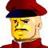

戦闘シーン。
モブで表現。
そして、戦闘が終わったあと。
 アベル 「もう、あんなに遠くになってる・・・」
アベル 「もう、あんなに遠くになってる・・・」
 イヴリン 「あんた、仲間の所に戻らなくて良かったの？」
イヴリン 「あんた、仲間の所に戻らなくて良かったの？」
 シャヒーナ 「あそこで紛争が続いているなら、怪我に関わりなく戻りましたから」
シャヒーナ 「あそこで紛争が続いているなら、怪我に関わりなく戻りましたから」
イヴリン 「うふん。そう言う顔してるわ」
アベル 「エクレシアの仲間は他のセツルメントにも？」
シャヒーナ 「ここを出たのは初めてよ」
アベル 「・・・そっか」
イヴリン 「アベルぅ、感傷的になってる暇はないわよ。脱出したセグメント艦を追ってるんだからさ」
アベル 「かなり出遅れてますけど、追い付くんですか？」
イヴリン 「スピードだけで言えば、追い付くのは最短でも”クォージィ”宙域の寸前ね」
シャヒーナ 「ギリギリね」
イヴリン 「まぁ、追い付かなくったって進路は同じだし、連中が網張ってる可能性もあるわ」
アベル 「僕達の足留めをするつもりなんですか？」
イヴリン 「それに、進路を同じくしてるのはセグメントだけじゃないわ。手負いの議会軍も、”クォージィ”方面を目指してるはずよ。どれに出食わしたって修羅場は避けられないわ」
シャヒーナがもういちど、セツルメントを見る。
ナレーション 「独立自治権を勝ち取った宇宙移民者群セツルメントは、ようやく得た平和の中に麻痺し、やがては特権主義社会を生み出し、結局は自らが小セツルメントへの圧政を強いるようになる。時に宇宙世紀２５５年。各地で起きたセツルメント内紛争は、体制側と、反体制側に別れてその共同戦線を張り、セツルメント間による強大な戦禍を巻き起こしつつあった」
タイトル
|
− The Man in the Iron Mask − |
広場の映像。
 ナディア 「我々は、その勝利を手につかんだのです。圧政を良しとしない善良なる軍人が、民に味方したお陰です。そして、救世主。我々のこのひとつの勝利は、次なる解放を生み、やがては宇宙を平等と自由に返すでしょう」
ナディア 「我々は、その勝利を手につかんだのです。圧政を良しとしない善良なる軍人が、民に味方したお陰です。そして、救世主。我々のこのひとつの勝利は、次なる解放を生み、やがては宇宙を平等と自由に返すでしょう」
 アッサム 「これで、ひとつ終わったな。ハン」
アッサム 「これで、ひとつ終わったな。ハン」
 ハン 「ああ、やっとひとつ・・・だがな」
ハン 「ああ、やっとひとつ・・・だがな」
アッサム 「クブラカンの情報によれば、コア９も落城寸前らしい」
ハン 「アッサム・・・。ようやく、民衆の時代が来るのか・・・」
アッサム 「来る。俺たちはそのために戦ってきたんだ」
ハン 「・・・来たぞ。パーノッド派のお偉方だ」

デュバル 「はじめまして。エクレシアの諸君」カザニス 「君が、クブラカンかね？」
アッサム 「いえ、クブラカンは我々のリーダーですが、彼はココには居りません」
デュバル 「いない・・・？ どう言う事だ」
ハン 「エクレシアはここ”レヴィック”だけじゃない。セツルメント全域のリーダーなんだ。いちいち出て来る訳がないだろ」
アッサム 「よせ、ハン」
カザニス 「・・・君たちバルバロイ・・・いや、エクレシアの最高指導者とは、一体何者なのかね。」
ハン 「俺が知りたいぐらいだぜ」
アッサム 「２度言わせるな、ハン。正直な話、我々もクブラカンの正体については知らない。ただ、彼の情報や、彼のツテなしじゃ、俺たちはここまでやって来れなかった」
カザニス 「あの女を使って海賊放送で民衆の支持を仰ぎ、単なる民衆をいっぱしの兵士として統率・・・」
アッサム 「何が言いたいんです？」
デュバル 「そして、軍の内情にも通じている・・・違うか？」
アッサム 「正直に言わせていただくと、私はあなた方、パーノッド派の誰かが、クブラカンじゃないかと睨んでる」
デュバル 「なに？！」
カザニス 「さもありなん、だな。確かに、軍内部でバルバロイに通じる事はタブーだ。やるとするならば正体は隠すだろうな。だが、パーノッド派の将校クラスにそれと思われるような該当者はいない」
アッサム 「・・・そうですか。ともかく、あなたがたが民主派として立ち上がってくれた事に深く感謝致します」
カザニス 「さして仲良くやるつもりはないが、お互い協力と利用をし合える関係を続けるとしよう」
アッサム 「それが、仲良くって事ですよ」
 シャイロン 「よし。パーノッド派の追跡回避の為、この地点に一隻残す。”クォージィ”への再出発は１２時間後だ」
シャイロン 「よし。パーノッド派の追跡回避の為、この地点に一隻残す。”クォージィ”への再出発は１２時間後だ」
 兵士 「はっ」
兵士 「はっ」
シャイロン 「どうした？」
 ルクレール 「残らせたスパイからの連絡が入りました」
ルクレール 「残らせたスパイからの連絡が入りました」
シャイロン 「ほう」
ルクレール 「ボワイエ一佐をはじめとする、我々にもパーノッド派にも属さない仕官数名が、パーノッド派のクーデターに対して反抗。核動力炉を占拠したそうです」
シャイロン 「いかにも頭の硬い軍人のやりそうな事だな。・・・それで？」
ルクレール 「例の救世主が核動力炉を奪回。クーデター阻止は失敗に終わりました」
シャイロン 「ふむ。馬鹿な軍人の自決で死者が出なかった事は何よりだ」
ルクレール 「諸共散華というのは、美学に反しますか」
シャイロン 「美学？ 死ぬのが怖いだけだ」
ルクレール 「ですがもし、核が爆発していれば・・・」
シャイロン 「バルバロイもパーノッド派もまとめて一掃出来た・・・とでも言いたいのかな？ はは。少し発想が強引過ぎるな。そのつもりがあるならば、最初からそうする」
ルクレール 「・・・そうですね。ですが、長官はそうやって人を惑わせるのがお得意のようですから」
シャイロン 「誉め言葉と受け取っておく」
ナディア 「勝利の暁にこそ、指導者は我々の前に姿を現すのです・・・」
 クブラカン 「諸君らの働きは、恐らく功を成しているだろう。残念な事に我々の勝利を、私は見る事が出来ないでいる」
クブラカン 「諸君らの働きは、恐らく功を成しているだろう。残念な事に我々の勝利を、私は見る事が出来ないでいる」
アッサム 「・・・クブラカン！」
ハン 「こいつが、クブラカンか・・・」
クブラカン 「私は都合上、身分を隠さねばならない立場にある。だが、君たちがこの映像を見ていると言う事が、勝利を勝ち取った証拠だ。まだまだ先は長いが、ひとまずの勝利と生き残った君たちに乾杯。死んでいった者達に黙祷をささげよう」
ルクレール 「こんな所にまで海賊放送か・・・」
クブラカン 「死者の魂に報いるためにも、小さな独立で満足してはならない！」
ルクレール 「・・・まさか！？」
クブラカン 「我々は敵対する組織セグメントの中に同志を見つけ、共に戦う事となった。この日を持って、エクレシアは烏合の衆ではなく、本当の意味での戦いを展開していく事になるだろう！」
アベル 「・・・この人が」
シャヒーナ 「クブラカンよ。初めて見たけど。思ってたより随分若いみたいね」
クブラカン 「これから先は小さな紛争ではない！ 圧制を強いる地球議会軍！ そして、彼らと手を結んだリカード派！ 何があっても彼らに屈してはならぬのだ！」
カザニス 「彼がクブラカン・・・」
デュバル 「染めた髪に、白々しいサングラス・・・。本人ではないかも知れませんな」
カザニス 「影武者だろうと何だろうと、調べてみる価値はある」
デュバル 「は・・・」
クブラカン 「この先、各地での紛争は我々の勝利に終わるだろう！ 何故なら、我々には腐敗した体制にはない団結があるからだ！」
デュバル （気の所為か？ この声・・・）

アイキャッチ「Ｇ−ＧＵＩＬＴＹ」
 技術兵 「は？」
技術兵 「は？」
ルクレール 「この２人の写真の比較分析をしてくれ、と言っている」
技術兵 「でも、これって・・・」
ルクレール 「くれぐれも内密に、だ。わかるな？」
技術兵 「は、はい」
ルクレール 「頼んだぞ！」
技術兵 「こ、断っておきますけど、このノイズじゃ結果の信憑性は７０％って所ですよ」
ルクレール 「七割バッターなら敵ナシだ」
ルクレール （可能性は・・・いや、だが・・・！ あの男、少なくとも何か裏がある！）
シャイロン 「どうした？ 私の顔に何か付いているか？ ・・・仮面の他に」
ルクレール 「いえ。少し、気になることがありまして」
シャイロン 「ほう？」
ルクレール 「レヴィックは完全に敵の手に落ちました。もし、この艦までが沈められたら、我がセグメント・フォースは大きな痛手を負います。しかも困った事に、目的は脱出と機密保持。更に、戦力の三分の一を割いたばかりです。つまり、この艦にはＭマシンを含む戦力が大幅に不足していますから、今を狙われたら、一溜まりもありません」
シャイロン 「次に出会う艦が敵ならば、私はパーノッドの回し者にされるな」
ルクレール 「長官のためにも、友軍である事を祈ります」
シャイロン 「もっとも、・・・敵なら私諸共散華だと思うが」
ルクレール 「・・・進路・指示ともに、変更はありませんね？」
シャイロン 「あったら、私は叛逆者だよ」
ルクレール 「結構です。・・・審判を待ちましょう」
 ダニエル 「・・・っと、来た来た！ おいでなすった！ ・・・民間船じゃない事は確かだな」
ダニエル 「・・・っと、来た来た！ おいでなすった！ ・・・民間船じゃない事は確かだな」
ダニエル 「船影発見だ！ ふたりとも、スタンバイ出来てるな！？」
イヴリン 「待ちぼうけ食らうかと思ってた所よ！ ヴォーテックス、出ます！」
アベル 「ソードケイン、出ます！」
ダニエル 「まだ敵の戦力は不明だ！ 先走るなよ！？」
アベル 「わかってます！」
イヴリン 「鬼が出るか蛇が出るか」
 兵士 「以上。被害報告を終わります」
兵士 「以上。被害報告を終わります」
 サーナイア 「下がれ」
サーナイア 「下がれ」
兵士 「は」
サーナイア 「やってくれたよ、バルバロイは・・・。進路は”タイタン”から”クォージィ”に変更！」
 兵士 「進路変更！ 目標座標軸を”クォージィ”に合わせろ！」
兵士 「進路変更！ 目標座標軸を”クォージィ”に合わせろ！」
サーナイア 「補給物資は”タイタン”経由で”クォージィ”にて受け取る。各員、それまで頑張って欲しい」
 兵士 「艦長・・・！ 機影２！ 高速で接近してきます！」
兵士 「艦長・・・！ 機影２！ 高速で接近してきます！」
イヴリン 「さぁて、セグメントか議会軍か・・・」
アベル 「来ます！」
イヴリン 「反応早いじゃない！ Ｍマシン６機！」
アベル 「後方支援お願いします！ 切り込んで崩します！」
イヴリン 「オッケー、任されたわよっ」
サーナイア 「第一次戦闘配備！ アモン隊！ 前回のような失態は許さんぞ！」
兵士 「艦長！ 接近中の機影は中型艦２です！」
サーナイア 「何処の艦か！？ 分析を急げ！」
兵士 「所属・・・、セグメント・フォース！ レメッド２機です！」
サーナイア 「っ・・・！ ど、どういうつもりだ！？」
兵士 「通信です！」
サーナイア 「通信！？ くっ・・・、開け！」
兵士 「はいっ」
シャイロン 「お初にお目に掛かります。こちらはセグメント・フォース、コア１０指揮官のシャイロン・チェイと申します」
サーナイア 「貴様が、シャイロン・チェイか」
シャイロン 「は。サーナイア少佐と存じます。本来ならば中央ポートにてお迎えにあがるはずでしたが、このような形になってしまい、誠に面目次第もございません」
サーナイア 「これは・・・っ！ どう言う事だ！？ 内情を説明せよ！」
シャイロン 「非常に申し上げにくいのですが、私も、あなたも、叛乱軍に出し抜かれた、という事です」
サーナイア 「くっ」
シャイロン 「今回の落ち度は当局にございますから、そちらの艦の補給も、我々が無償でお引き受け致しましょう。詳しい報告は、我らの本拠地コア１１に到着の際にさせて頂きます」
サーナイア 「ふん。そいつは助かるな」
シャイロン 「幸い、我々はほぼ無傷で脱出に成功しました」
サーナイア 「その艦、まさか追跡されているのではあるまいな？」
シャイロン 「実を言うと後方からの追跡者があったようですが・・・、御安心下さい。どうやらたった今、追跡防止用の網に引っ掛かった様子です」
サーナイア 「結構。諸君らの巻き添えを二度も食うのは御免こうむりたいからな」
シャイロン 「謝罪の代わりと言っては何ですが、コア１１までのエスコートをお任せ頂きたい」
サーナイア 「親切な事だな。送り狼にならないように、先行して頂く事が条件だ」
シャイロン 「御随意に。・・・いや、失礼。御意、でしたな。」
イヴリン 「敵機照合！ セグメントフォース！ 来るわよ、警戒して・・・きゃあっ！？」
アベル 「機雷！？」
イヴリン 「トラップでお出迎えなんて感激だわよ！」
アベル 「ダミーまで出してるのか！」
アベル 「艦が後退してる！？」
イヴリン 「アベル！ 気を付けなさい！ こいつら、あたし達を足留めする気よ」
アベル 「この数の機雷じゃいくら何でも・・・！」
イヴリン 「あたしは先行して艦長に迂回進路を取らせるわ」
アベル 「了解です！ 敵マシンは請け負います！」
イヴリン 「聴こえてる！？ 敵は予想以上の広域に網を張ってるわ。お魚は網の中よ！」
ダニエル 「爆破して突っ切れないのか？」
イヴリン 「メダカを釣るつもり？ 拡散ビームのアタリで安全空域を調べて」
ダニエル 「承知！ 索敵班！ ソナー！ 気ぃ抜くなよ！」
アベル 「またっ！ こう機雷が多いと・・・！」
アベル 「だけど、ここはもうセツルメントじゃないんだ！ 遠慮なんかしない！」
イヴリン 「ひゅ〜ぅ、アレだけ動き回って機雷に触れないなんて・・・」
ダニエル 「しばらくセツルメント内部で、腫れ物に触るような戦闘だったからな。機雷があっても動ける方が楽なんだろ」
イヴリン 「・・・に、したってね」
アベル 「最後っ！！」
ダニエル 「アベルっ！ 艦は追うな、ヴォーテックスと合流しろ。機雷源を抜ける事が先決だ！」
アベル 「は、はい。了解しました」
シャイロン 「これで、疑いは晴れたかな？ いや、議会軍も友軍と言う訳ではないな。私はまだグレイ・ゾーンと言う訳か」
ルクレール 「いえ、失礼致しました」
シャイロン 「私が君の立場ならそうする。気に病まない事だ。」
ルクレール 「は」
ルクレール （一体・・・、何を企んでいる、シャイロン・チェイ！）

ナレーション 「新たなる地を求め、旅立った一行。しかし、彼の地を目指すのは、アベルたちだけではなかった。一同が会するポイントを抜け出し、逸早く”クォージィ”へとたどりつくのは誰か？ 次回、『決死のラリー』 Ｇの鼓動が、今目覚める」